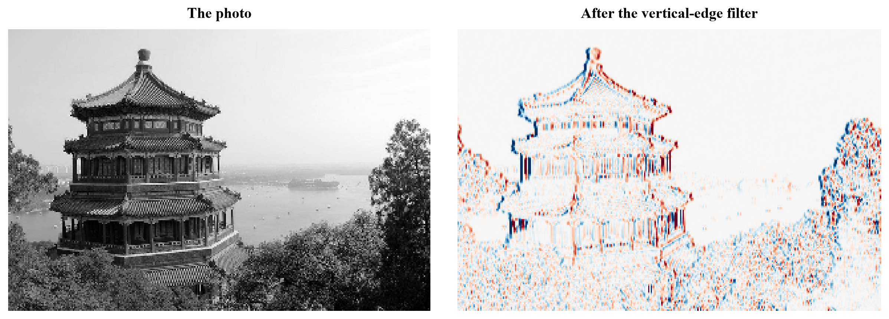
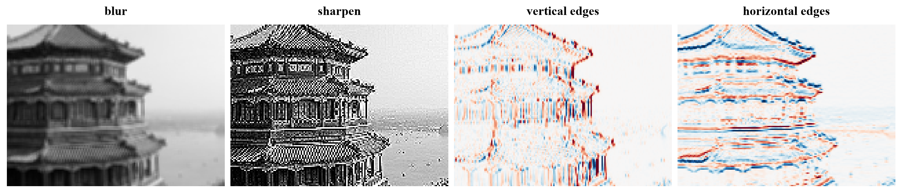
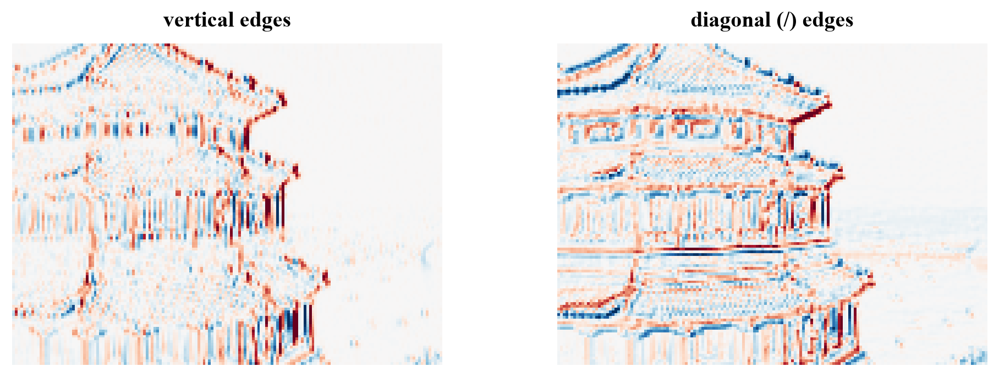

image (214, 320) -> feature map (212, 318)

The operation behind every image network: a small grid of weights slides over the picture and answers the same question everywhere. Today you do it by hand, then let PyTorch do it fast.

In week 5's digit reader, every hidden neuron looked at all 64 pixels at once, with a separate weight for each. But an edge is an edge wherever it is in a picture. Wouldn't it be smarter to learn one small "edge detector" and use it everywhere? That's a convolution, and it's the reason computers now see so well.
A filter (also called a kernel) is a small grid of weights, often . Put it on the top-left corner of the image, multiply each weight with the pixel under it, and add the nine products: that's the first output pixel. Slide one step right and repeat, row by row:
The result is another image, a feature map: bright where the patch looks like the filter, dark where it doesn't. The weights decide what the filter looks for:
Two things make this the right tool for images. The filter is local: it looks at one small patch at a time, where the meaningful patterns are. And it is shared: the same nine weights are used at every position, so a feature learned in one corner is found everywhere, and the layer has 9 weights instead of one per pixel pair.
The sizes: a filter fits times along a side of pixels. Padding adds a border of zeros so the output keeps the input's size; stride 2 jumps two pixels at a time, halving it. Max pooling keeps the largest value in each block, halving the size and keeping the strongest responses.
A convolution slides one small set of weights over the whole image: local, shared, and the same question asked everywhere.
The image is and the filter , so the feature map is . Hover any output pixel to see which patch made it, or press Slide it.
With the vertical-edge filter on the 7, which strokes light up, and why is the long bar on top almost blank? Switch to horizontal edges. Then type your own filter: make one that finds only the left side of strokes, or one that answers "is this pixel inked but its right neighbor not?". Finally turn on ReLU: that's exactly what the first layer of a CNN outputs.
ml-w9d1.ipynb. To change the code and run it yourself, open the notebook in Google Colab (free, in your browser) or download it for your own Jupyter.import numpy as np
import matplotlib.pyplot as plt
from sklearn.datasets import load_sample_image
photo = load_sample_image("china.jpg").mean(axis=2) / 255 # (427, 640), gray, values 0 to 1
photo = photo[::2, ::2] # half size: quicker by hand
def convolve(image, kernel):
"""Slide the kernel over the image (no padding, stride 1): multiply and add at every position."""
k = kernel.shape[0]
H, W = image.shape
out = np.zeros((H - k + 1, W - k + 1))
for i in range(out.shape[0]):
for j in range(out.shape[1]):
out[i, j] = np.sum(image[i:i + k, j:j + k] * kernel)
return out
vertical_edges = np.array([[-1, 0, 1],
[-2, 0, 2],
[-1, 0, 1]]) # the Sobel filter: right side minus left side
edges = convolve(photo, vertical_edges)
print("image", photo.shape, "-> feature map", edges.shape)
fig, (ax1, ax2) = plt.subplots(1, 2, figsize=(11, 3.8), layout="constrained")
ax1.imshow(photo, cmap="gray")
ax1.set_title("The photo")
ax2.imshow(edges, cmap="RdBu_r", vmin=-2, vmax=2)
ax2.set_title("After the vertical-edge filter")
for ax in (ax1, ax2):
ax.axis("off")
plt.show()image (214, 320) -> feature map (212, 318)

filters = {
"blur": np.ones((3, 3)) / 9,
"sharpen": np.array([[0, -1, 0], [-1, 5, -1], [0, -1, 0]]),
"vertical edges": vertical_edges,
"horizontal edges": vertical_edges.T,
}
crop = photo[40:160, 60:220]
fig, axes = plt.subplots(1, 4, figsize=(13, 2.8), layout="constrained")
for ax, (name, kernel) in zip(axes, filters.items()):
out = convolve(crop, kernel)
edge = "edges" in name
ax.imshow(out, cmap="RdBu_r" if edge else "gray", vmin=-2 if edge else 0, vmax=2 if edge else 1)
ax.set_title(name)
ax.axis("off")
plt.show()
import time
import torch
import torch.nn.functional as F
img = torch.tensor(photo, dtype=torch.float32)[None, None] # (1, 1, H, W)
bank = torch.tensor(np.stack(list(filters.values())), dtype=torch.float32)[:, None] # (4, 1, 3, 3)
t0 = time.perf_counter()
maps = F.conv2d(img, bank)
print(f"PyTorch: 4 filters in {1000 * (time.perf_counter() - t0):.1f} ms, output shape {tuple(maps.shape)}")
print("same as by hand:", np.allclose(maps[0, 2].numpy(), edges, atol=1e-4))PyTorch: 4 filters in 15.1 ms, output shape (1, 4, 212, 318) same as by hand: True
x = torch.rand(1, 1, 28, 28)
for name, layer in [("3x3, no padding", torch.nn.Conv2d(1, 1, 3)),
("3x3, padding 1", torch.nn.Conv2d(1, 1, 3, padding=1)),
("3x3, padding 1, stride 2", torch.nn.Conv2d(1, 1, 3, padding=1, stride=2)),
("2x2 max pooling", torch.nn.MaxPool2d(2))]:
print(f"{name:26s} 28 x 28 -> {tuple(layer(x).shape[2:])}")3x3, no padding 28 x 28 -> (26, 26) 3x3, padding 1 28 x 28 -> (28, 28) 3x3, padding 1, stride 2 28 x 28 -> (14, 14) 2x2 max pooling 28 x 28 -> (14, 14)
Design a filter that lights up along edges running like "/", and compare its feature map with the vertical-edge one.
diagonal = np.array([[0, 0, 0],
[0, 0, 0],
[0, 0, 0]]) # TODO: your weights
fig, (ax1, ax2) = plt.subplots(1, 2, figsize=(9, 3), layout="constrained")
ax1.imshow(convolve(crop, vertical_edges), cmap="RdBu_r", vmin=-2, vmax=2)
ax1.set_title("vertical edges")
# TODO: show convolve(crop, diagonal) in ax2
plt.show()Copy the idea of the vertical-edge filter, turned 45°: negative weights on one side of the "/" diagonal, positive on the other, zeros on it. Check that they add up to 0.
diagonal = np.array([[-2, -1, 0],
[-1, 0, 1],
[0, 1, 2]]) # bottom-right side minus top-left side: zero along "/" lines, sum 0
fig, (ax1, ax2) = plt.subplots(1, 2, figsize=(9, 3), layout="constrained")
ax1.imshow(convolve(crop, vertical_edges), cmap="RdBu_r", vmin=-2, vmax=2)
ax1.set_title("vertical edges")
ax2.imshow(convolve(crop, diagonal), cmap="RdBu_r", vmin=-2, vmax=2)
ax2.set_title("diagonal (/) edges")
for ax in (ax1, ax2):
ax.axis("off")
plt.show()
print("The filter compares the two sides of a '/' line, so it lights up wherever brightness changes across one.")
The filter compares the two sides of a '/' line, so it lights up wherever brightness changes across one.
Quantum convolutional neural networks (Cong, Choi and Lukin, 2019) borrow today's two ideas: the same small two-qubit "filter" circuit is applied to neighboring qubits all along a chain, then half the qubits are measured away, like pooling. Sharing the same few parameters everywhere also keeps them trainable, which matters a lot for the barren plateaus you met in Quantum Computing.
ISLP section 10.3.1 (convolution layers). Dumoulin and Visin, "A guide to convolution arithmetic for deep learning" (2016), has the clearest pictures of padding and stride. The free book Dive into Deep Learning (d2l.ai), chapter 7, sections 7.1 to 7.3.
Tomorrow: stack convolutions, ReLU and pooling into a convolutional neural network, and let it learn its own filters.

Tap the button to save it. Short and steady wins.
Marked by mistake? Undo